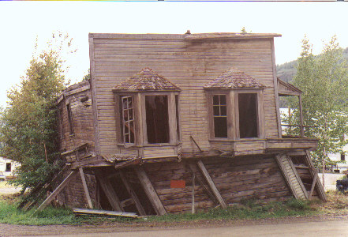

I made a few changes to the bike before the
trip. Put on a tall Parabellum windshield,
and a leather Corbin seat.
Tried a set of bar backs earlier which didn’t give me the wrist angle I
wanted. Bought some billet alloy and machined a pair of my own design with
a built in ten degree twist
that rotated my wrists up higher, the same angle as my old 1980
R100RT.
I through
drilled them for stainless steel nuts/bolts that I could torque much tighter.
If I dropped the bike in the boonies, the bars should be easier to fix
than stripped aluminum threads in blind holes. Put on softer foam grips,
reduced what little vibration there was left. I tested grips by putting
two kinds on the bike together, your hands tell you which one feels better
pretty fast.
My luggage was regular hard bags and a small Krauser
top trunk, plus my tenting gear in a 30 liter
waterproof Sealine kayak bag.
I carried a two man Kelty Vortex 2
tent ( good dome type rectangular tent ), a Thermo-rest
self inflating pad , and a Woods
city 350 liteloft bag that is rated to five
deg C and packs up about the size of a loaf of bread . This all fit
in the waterproof bag I kept on top of my rear seat with bungees.
I kept clothes to a bare minimum. Took two pairs of jeans, one pair shorts,
a bathing suit, half a dozen T shirts, one fleece sweater, and my touring
boots. No extra shoes or sandals as luggage space was pretty limited.
Carried all my camera gear in a small Pelican 1200 waterproof case inside
the hard saddlebag, a Pentax MX
body with 4 lenses, 28mm, 40mm, 50mm,
135mm. I like the MX because it is the smallest
35mm camera Pentax ever made, and is totally mechanical, if the battery
dies you still have all your shutter speeds. Shot mostly negatives
and a few slides.
Day 1
:
July 21st 1998. My family was overseas
visiting relatives , and I had just finished working as a focus puller
on a TV movie here. It was good timing for a trip, and I had one
month to do it. My last trip had been after the Titanic film here two years
ago. (As key rigging grip I got to hang a 20 ton Russian deep dive sub
in the studio). James Cameron made us all somewhat richer, so I went rafting
through the Grand Canyon for a week. This time though, I was ready for
a good long distance two wheel flog. I left Halifax
with 16,400 kms
showing on the odometer. Went direct to Moncton, then north up backroads
thru Rogersville to Miramichi river and over to Grand Falls , 28 degrees
C here. Made it north to Riviere du
Loup by late afternoon and took the ferry
to St. Simeon
on the north shore of the St. Lawrence River.
This is a nice boat ride, about one hr and approx $ 30. There were
a few bikes onboard, one Harley was towing a trailer made from a big wooden
beer barrel with a tap on the back. The top was cutoff and a dog had his
bed inside. Drove up the west side of the Saguenay River to Robertval
about 10pm and tented. Managed to do about 1100
kms for the day.
Day 2
: I’d always
wanted to drive the road to Chibougamau
over to northern Ontario. It is 200 kms shorter to Thunder Bay (from Riv
du Loup) than the Trans Canada and had some other great advantages I soon
found out. Imagine a 600 km road (from Lac
St Jean to Senneterre) with great scenery
( ahh . . yes . . . and a lot of trees too),
long straights, gentle curves, almost no trucks, no tourists, and for a
real bonus . . . no police.
There’s a station in Chibougamau, but that’s 20kms off a T junction down
a dead end. Well, if you want a trip to long distance speed nirvana
, this pretty well qualifies, short of driving to Montana or Nevada. I
ran between 120 and 150 kph for most of it. Lowest temps were 14
degrees in sun , got better as I hooked south again. From Senneterre I
went west on paved backroads to Cochrane
( still no traffic to speak of ) and hit thunderstorms and heavy squalls
after supper. Put on my rainsuit and rain boots. Took a cheap motel in
Kapuskasing
for $ 25. About 1200 kms total for the day.
Day 3
: Hit rain and dirt construction
sections, miserable day. Picked up a stone in my throttle pulley V groove,
noticed lumpy running below 2500 rpm. The local BMW mechanic Ed, found
my first one last year, so I looked again and there it was, got it out
with a toothbrush. Voila, smooth again. Feeling happy with myself I charged
off into the “ughknown” and managed to run out of gas in the butt
end of nowhere. I had added 3 liters to the tank capacity ( total now is
26 liters ) with an RT filler neck before I left and was obviously feeling
too cocky. As my Kansas City friend used to say, I was now
a
victim of the six P’s :
". . . Proper Planning Prevents Piss Poor Performance . "
Standing in the rain, I held my one
liter oil can over the tank upside down while pointing to it as people
drove by ( not many people going by either out here). A fellow biker driving
a pickup truck stopped and took me to a fishing guide 6 miles away who
had a gas pump and a beat up Harley, everyone else within 30 miles had
two stroke mixed for the next chainsaw derby or whatever. I only lost about
90 minutes and swore that would be the last
time…. and it was. Made it to Thunder
Bay as the weather kept improving, then had
a great ride to Dryden
through the woods on a twisty but good road in the evening and late twilight.
Splurged on another cheap hotel, $ 50, and hoped it would be my last. (
not
) 1000 kms today.
Day 4
: Back in the transCanada traffic I
left in New Brunswick
, doing 3500 rpm, at 110 km/h. Ho hum , sure do miss
Chibougamou. Temperature picking up on the digital thermometer, hitting
30 degrees. Bypass Winnipeg
to my north, look at the aviation museum in Brandon then across the ‘bald
ass prairie’ to Moose Jaw
for a night tenting. $ 6, a new low ! Park beside two his and
hers Harley Davidsons from BC, one towing a trailer. My four day
target to reach Calgary is not going to happen. Needed another 2 hours
a day in the saddle to do that. Still happy with the pace so far,
1000 kms today.
Day 5
: 700 kms left to go to
Calgary, things starting to get really hot
at Swift Current,
35.4 deg C. Funny how you feel better when that readout drops even two
tenths of a degree. Open my boot flaps down to catch more wind, soak the
T shirt in water, let it hang out at the waist and leave the leather jacket
on half open to grab more evaporation. This lasts at least 2 hours if you
control the jacket intake, your armpits and back stay cool and wet for
a long time. I learned this from travelling in Australia
years ago riding in a car all day at 42 deg C on dirt roads…. ( sounds
pretty ugly doesn’t it ?) Leave your shirt off, put a dripping wet
towel around your neck and spread it across your chest, turn the vent windows
in and suddenly you’re “ a bloody big canvas water bag, mate “, getting
all that free evaporation effect. Worked for me this time too. Made it
to Calgary by 3pm, noticed the temperature dropped 5 degrees an hour east
of Calgary, must be the cooler air coming off the mountains, was a big
relief. Stayed with Dave, an old skydiving friend from Halifax.
Day 6
: Sunday. Visited relatives and planned
my next move, now that I had successfully made it this far. Most people
back home thought this was my final destination. My philosophy is : why
tell them where you’re going if you may not get there, tell
them where you’ve been .
Day 7
: Monday. Went to Blackfoot Cycle for a rear
tire, big store selling all brands plus beemers. Great guys, fast service…
out before noon. The Bridgestone BT 54 was shot and I put on a Dunlop sportmax
touring 205, ( I notice they are on the new R1100S ) , the only decent
tire (at a price I was up for) that they stocked in 18 inch. I figured
it was a sacrificial tire anyway, if it did what I wanted and got me home
it wouldn’t owe me anything. Threw in a new air filter and hit the road
for….. where else…. Sparwood BC ,
home of the world’s largest dumptruck. Went down hwy 22, one of the prettiest
in Alberta, to the Crowsnest Pass,
and through the Frank slide to Sparwood. Took some pictures of the 350
ton capacity Terex Titan
(only one in captivity I believe) sitting at the tourist bureau for my
two boys.
Well
worth the detour. Backtracked to Coleman and turned north on the dirt forest
service roads towards Banff. Did 100 kms of gravel road, very well maintained
and easy to average 70 to 80 km/h on. Came out in Kananaskis valley,
another half hour of pavement to Canmore.
Real pretty scenery too. Tented in Canmore… $ 8
600 kms today.
Day 8
: Toured Banff, wandered around the
Banff
Springs Hotel where I worked as an electrician
in 1970. Used to have pass keys for every place in that building, and now
I gagged at the huge growth it had gone through. Did Lake Louise going
north (more crowds, seen it in better days thank you) and headed for Columbia
icefields. Spent the night wild camping outside Jasper.
Listened to huge coal and freight trains screaming past on the main CN
line. No charge. 500 kms today.
.
South of Jasper
Day 9
: Nothing too exciting, saw Mt Robson on the
way to Prince George,
made it to Smithers that night. More tenting at municipal campground.
825 kms today.
Day 10
: No one comes for my money by 8am. Ten minutes
later I’m gone. Made it to Prince Rupert
an hour before the Alaska ferry left. Met Ed and Bill. Ed was from Red
Deer, Alberta, pulling a trailer with a Yamaha Venture, Bill (not his real
name) had long hair and was riding a Goldwing to Alaska from California.
Ed asked me where I was going, told him I didn’t know, either Haines or
Skagway , the last two stops on the ferry trip. Ed said he had planned
to go south to Bellingham, Washington, but there were no tickets left on
that boat , so he said ‘ What the hell, I’ll go to Alaska instead
.’
Ed Zaparniuk - 'Alaska
? ... why not ! '
We had
a good trip, 36 hours for about $220 US. Stopped in half a dozen ports
including Juneau
the capitol (imagine Ottawa with no roads in or out…. can you spell airline
profit ?)
After a day of camping out on the deckchairs with Bill and lots of other
tourists from all over the globe, I realized I didn’t know what he did
for a living. I figured him for a diesel mechanic, or construction worker
maybe. So I asked him.
He paused
for a moment and then said “ . . . . well
Tree . . . , I’m a state trooper.”
I just started to laugh, he had such a perfect cover.
“ Oh ya,” he said, “ you wouldn’t believe the guys who come up to me and
try to sell me dope on the street. . . . ”
I asked him if he ever drove highway patrol, he had for the first few years
. He was a funny guy, had some good stories. Told me about running
into some Hells Angels outside a bar once as he got on his bike, worried
they would recognize him under his helmet and shades. Just as he’s backing
out one guy yells at him “ Hey, hey” and runs over. Gets all his buddies
around and points down at Bill’s bike, “would ya looka dat, holy
sh i i i t, his bike’s got reeee-verse ! ” They all stand around
and marvel , one guy says… “what’ll those #@**# Japs think of next ! “.
A week later, Bill’s out on the freeway when a chopper roars up beside
him but doesn’t go by and the guy is waving and hollering at Bill. Oh no,
here we go again, Bill’s thinking. Guy yells “Reee-verse !!!”
pointing at the gas tank and waving. Reminds me of a famous quote about
Alaska . . . . . . “ Girls, if you want to
get married, go to Alaska. The odds are good . . . . but the goods
are odd. ”
Day 11
: All day on the boat. Nice ferry
ride up thru inland passage to Skagway. Stopped at various ports including
Juneau. Ed and I took a taxi into town for some new cigars for him, and
stopped to look at the glacier that sits north of the city. I notice that
the bikers don't wear helmets in general, but their passengers do, must
be a town or state bylaw.
Day 12
: Bill got off the boat in the drizzle
at Haines about
2am heading north via Haines Junction to Alaska. This route is very pretty,
and is about 100 miles shorter than Skagway through Whitehorse to Haines
Jct. ( The Skagway route is no slouch for scenery either. ) We dock at
Skagway.
It's 4am, 10 deg C and drizzle.
Glen
and his wife are on another Goldwing from Minnesota pulling a trailer.
Ed and I follow him out through the deserted town. We climb steeply up
the White Pass trail into the morning fog. It is 20 miles to the Canadian
border. For a while we are up in the clouds then down to a very desolate
border crossing. Brrr. No hassles . . . do I have any guns,
booze, bad habits etc. We have coffee at Carcross
(caribou crossing) where 30,000 homemade boats came down the lake in the
Klondike goldrush of 1898, then on to Whitehorse
( 200 km from Skagway ) for breakfast. Glen heads north, Ed heads south
down Alaska hwy to Dawson Creek and back to Red Deer. I go to look for
an oil change. My bike had used less oil than I expected on a long trip,
half a liter in 7500 kms . Stop at the Yamaha dealer and browse, see heated
vests for $ 99 , the same one was $ 120 in Hfx …. What’s a guy to
do ! Sold.
Go to Crappy Tire and get some more 20/50 Castrol (my last GTX… switched
to Motul synthetic later in trip), then back to the dealer who cheerfully
loans me a drop tray for my 4 liters of very black stuff. Yes, I agree
7500 kms is a bit excessive, but they were all highway miles weren’t they
your honour. Install my spare oil filter,
throw in a new pair of spark plugs
and I’m ready to roll. Spend the night at a friend’s place 10 miles out
of town. Paul has been there for 25 yrs, living in a nice three story 20
x 20 ft house with no plumbing. His livingroom has the biggest collection
of car and bike books I have seen in years. Neat house. Kitchen is the
first floor, livingroom the second, and bedroom loft is on the top. His
buddy who lives 10 miles further away and has no phone service, installed
an antenna on Paul’s roof and has a repeater on a mountain somewhere else.
Box of electronics in Paul’s kitchen switches calls into Yukon
phone system from out in the woods. Lots of that kind of ingenuity
around from what I see.
Day 13
: Do some regular maintenance on the
bike, install electric vest plug wires on battery, vacuum dirt and stones
out of airbox and filter. Head north for Dawson
City, home of the Klondike. Just north
of Whitehorse,
go down a dirt road to Lac la Barge,
made famous by poet Robert Service
( “ twas on the marge of Lac Labarge “’ or some such line ). Wash
my face and cool off. Find a perfect bullet head sitting in the water
just under my eyes. Put it in my pocket for a souvenir. Stop at the Yukon
Baha ’ i Institute which is on this road and meet some fellow Baha’is from
Africa and Ottawa. Very nice wooden building with high ceiling in a six
sided circle shape. Continue north through some newly burned forest fires,
patches of ground still smoking. Very dry season, fires for last two months
in this area. Get about halfway to Dawson, tent in Minto by the Yukon river
at 10pm. Cold water running fast, you can hear the current as it
breaks around the rocks by the shore. Stays light enough to see until about
1am in my tent. 300 kms today. Campground $ 10
Day 14
: Up early, come to the gravel
turnoff to Inuvik, the end of the world for Canadian roads. Head up the
Dempster
hwy a few kms for a short look see.
It is 700 kms to the end, t oo far for me this trip . It would take 3 days
to do it properly and I know I won’t have the time I need in Alaska if
I go. Ride into Dawson City,
. 
Dawson City on the Yukon River
stop
at Beaver Creek to tour the gold smelting museum run by Parks Canada. Well
worth the hour or so. Drive up Bonanza Creek 12 kms to see huge floating
dredge that Parks Canada restored from the fifties. It has floated
UPHILL in it’s own pool of water for miles,
digging ahead and filling in behind as it went. Drive around Dawson
City, all dirt streets, neat atmosphere. Lots of stores, cafes, museums,
falling down buildings left there on purpose. Meet eight German guys dressed
like scouts all in lederhosen with boat knives on their belts who
have paddled down the Yukon River from Carcross
in 3 canoes. Funny sight. The whole world seems to be in the Yukon
. Go across the river by ferry at the north end of main street to
tent at gov’t campground. Set up next door to a fortyish guy from
Oklahoma
in a wheelchair and pickup truck. Says he’s cruising around seeing
the north. Sleeps in back of truck, no hassles raising a tent ( or fighting
off bears for that matter ! ) 450 kms today.
Day 15
: Head north from Dawson in sunshine
towards the border and Tok, Alaska.
First 100kms is most incredible road I have driven on a bike called Top
of the World hwy. It climbs and climbs, following
mountain ridgelines and not down in the valleys. Great views in all directions,
immense vistas, huge distances. A camera can’t even begin to capture the
feeling.
Top of the World
highway
Road
is now finally paved to border, took 3 yrs to finish. Long sweeping curves
through scenery that looks like the Scottish moors at times, like a huge
road racetrack that never quits. Quite a few motorhomes around, mostly
US plates with big Cummings diesels, 35 footers
worth $ 150,000 US towing full size trucks
or Cherokees behind, with on the roof in-motion satellite tracking antennas
for TV and a couple of air conditioners. The sight of one of them coming
the other way with a 70 yr old woman or man driving is sobering on a bike.
Arrived at the Alaska border, a real frontier outpost high on a hill, (
this road is not even open in the winter ) and the US immigration
guy asks me where I’m from. Oh, Nova Scotia .... well, do I know the Rankins
? Yes, worked on some of their music videos. His wife is from New
Brunswick. She likes their music. He says "Well, have a nice trip but be
real careful for the next 106 miles . . . . it’s all dirt " , (and motorhomes).
It will take about 3 hours he adds. So, you leave Top of the
World and fall off the edge of the world, or so it seems. Not a goat track,
more like a chicken track in places. God help you if it’s raining. In fact,
the first town you come to is Chicken, Alaska…
population 17.
Downtown Chicken , Alaska ( they have their own website and it is a hoot
)
www.geocities.com/thetropics/4097 )
I noticed
in Alaska that the airports are all well maintained, even in tiny towns,
but the dirt roads take second place. Maybe that’s because one in
eleven people have a pilot’s license, or so I once read years ago.
Plodded along, noticed the absence of bikes for the first time on this
trip. Dirt in Alaska seems to scare off ninety percent of the riders
from what I saw. What do they say ? . . . when the going gets tough,
the tough get weird. Stopped at a river to shave in a pool by an abandoned
dredge the size of a small ferryboat.
Lots of people stopping to check it out, only man made diversion for fifty
miles I reckon. Hit some nicer gravel sections that ran straight for miles,
would allow up to 100 to 110 kph. Came down mile after winding
mile out of the mountains into Tok after about three and a half hours.
Back on pavement. This stretch was probably the highlight of my trip, don’t
pass it up if you’re on a bike and the weather is half-decent. Went north
to Delta and
camped, did a load of wash. 550 kms today, slow maybe but good ones.
Day 16
: North to Fairbanks,
small city of about 35,000 Went to 3 bike stores snooping, even found
a Ural dealer with new sidecar rigs from Russia in his showroom.
He had city map on wall with all the dealers marked so it was no problem
to get around and see them all. Seemed like a real friendly town. Went
shopping, bought a very sharp locking blade knife on sale, it was either
that or pepper spray and the can was too big for my gear. Wanted something
for bears as a backup in the tent, at least this way I could cut an exit
in a hurry if I had to. My swiss army knife didn’t inspire me for
hand to hand combat somehow with its nice folding blade . . . ow !
Went outside and the rain started ( was to last 3 days). Decided
to head south and hope for better conditions. Drove down hwy 3 towards
Anchorage. Spent a very wet night in a hotel near
Denali state park (Mt McKinley). $ 58 US,
my most expensive so far. Low clouds and drizzle, tourists (on a
huge scale) had not seen the mountain in weeks. 400 kms, a light
day.
Arctic Snow Train wagon from US army
1960's ? - by hwy north of Delta ( there were 8 wagons plus tractors at front
and rear for winter travel - 572 ft long ! )
Day 17
: Temps as low as 8 deg C, occasional
rain. I’m really using the electric vest now. Running silk long underwear
under sweater, vest, leather jacket and rainsuit. Feels good.
Drove to Anchorage
down a very nice paved hwy between the mountains. Met four guys in a restaurant
on Goldwings from Florida and Wisconsin, mostly late forties and older.
One fellow was pretty amazing, he was an amputee from the left elbow down.
I didn’t get to see him riding or look at the bike modifications, but I
know for a fact he did not use an artificial arm. Also saw lots of other
beemers between Fairbanks and Anchorage…. Swiss, German and
even Spanish guys, mostly on F650’s or GS 1000 and 1100’s. The six Spaniards
had shipped their machines to Spokane
and driven up to Alaska.
Got to Anchorage, was tired of having wet, cold hands so I went straight
to the REI outdoor
equipment store to find the solution I thought might be there. Got
the last pair of goretex overmitt shells for mountain climbing , $ 69.
These were not the normal mitts, but had five finger design which I wanted.
Now I could wear my leather Kevlar gloves underneath, or my thick aquacell
ski gloves for more warmth. ( I had alreadydecided
that aquacell must stand for ‘absorbs water’ , but the beating they got
for hours in the rain would have killed any glove that wasn’t a goretex
type ). Went to another hotel for the night ( my fourth and last
on the trip ), cause I wasn’t up for the rain/tent combination. Spent $
80 US for a room , ouch ( the exchange rate was approaching 150 % ). Slow
day, 400 kms.
Day 18
: Woke up, looked at the rain
and decided to head south for Seward
on the Kenai peninsula,
a very popular tourist area. Figured the weather couldn’t be worse down
there , and in fact it improved. Made a detour to the Anchorage airport,
mindblowing collection of dozens of floatplanes, plus parking lots with
at least a thousand light aircraft, mostly supercubs with tundra tires
for landing on gravel bars in the rivers. Stopped to see hundreds
of locals fishing salmon in a river just outside of town. Sunny at Seward
, looked at cruise ships, ate smoked salmon called ‘squaw candy’,
and backtracked north until turnoff to Homer.
Ran through rain squalls and sunshine all afternoon. Got to Homer 9pm ,
a small fishing village at the end of the road. It looks like the end of
the world, small community on the very tip of a flat beachrock peninsula.
You can feel Russia
just over the horizon somewhere. Tented on beach for $3. Life is
easy in Homer. 600 kms today.
St. Augustine Island 75 miles SW of Homer,
4100 ft high volcano
Day 19
: Woke up to see a volcano all by itself
out to sea, inactive and height about 4000 feet. Neat sight in the
pink dawn sky. Not much to do in Homer, so I headed north. This was
my psychological ‘ turn around point ’ , where I felt I was no longer outbound
but on my way back home to Nova Scotia. Had just turned exactly 10,000
kms. Drove to Anchorage in occasional drizzle, then became sunny
and on to Slanajust
west of Tok.
Don’t blink, you’ll miss it. Found a friendly older pioneer type
lady driving a bulldozer at her new campground, carving out some more RV
spots. I was the first and only customer by the look of it. Tented. $ 12,
no bathrooms or water hooked up yet. Generator running in shed to power
the ranch , reminded me of the gennies all over Australia powering the
outback towns. Thumpa thumpa thumpa . . . Nice sound to fall
asleep to. .800 kms today.
Day 20
: Some of the best scenery on the trip
today. Wrangell Mtn range
to the south with brilliant white snowfields and glacier rivers.
Wrangell mountains
Went
past Alaska’s only active volcano, hidden in it’s own steam cloud and overcast.
(Can’t remember the name of this peak). Drove east to Tok then south to
Haines Junction. Some stretches of dirt construction
but none longer than 5 miles. Nothing my streetbike couldn’t handle. Met
Jim from Detroit on a Honda VFR, overloaded with a huge hockey gear bag
on the back, must have been at least 150 lbs. He was doing about 95 mph
when he went by me the first time. Met him further down the road
taking a break. He was coming from Prudhoe
Bay, the end of the dirt road in Alaska, heading
for the ferry at Haines to Washington state. Did the dirt road with a Swiss
guy on a GS1100 BMW in the rain, unbelievable. He said his bike was
pretty heavy, had dropped it about six times, mostly trying to park it.
The 4 man tent and two sleeping bags were definitely overkill he had decided.
Seemed to be having a good time though, so we ran together for half an
hour until I stopped for more pictures. Kluane
Lake was amazing, huge and covered in a sea
mist. Destruction Bay
one of the most desolate spots I have seen , no wonder it got it’s name.
Got to Haines Jct
about 9pm, tented $ 10. 600 kms today.
Day 21
: Met two guys on beemers last
night at a restaurant, one was a fisherman on a R90S going home to Homer,
the other a late forties guy with a pony tail riding a fast K1200RS. They
had just road raced from Whitehorse, 90 miles south. Chris, the older guy
was really pumped up, looked at me and said ‘ One hour from Whitehorse….
SMOKIN’
! ! ’ He was from New Hampshire, had
come west in nine days, about 4600 miles. I asked him … “ Get any
speeding tickets on the way ? “ Ya, two “How much
did that cost you ?” $ 480 ! “ That’s a lot of money
Chris !” No man…. Listen, it’s a bargain… two days at the racetrack
back home costs me five hundred bucks, I’ve been speeding for TEN
DAYS and I’m still TWENTY BUCKS AHEAD
. . . . . . . .
SMOKIN ' ! !
!
Headed
south to see Haines and
the mountain scenery on the way, nice ride down a wide valley with a few
extremely long straight stretches, almost no traffic.
Opened
the bike up on one of them to see what the top speed was closer to sea
level, with luggage. Reached about 205 before I backed off.
It would go higher with less weight I figure. Apparently I passed
Jim somewhere along the road . He was camped behind a rock and saw me go
by, he had a very cold night at a higher altitude than me. Met him
later in Haines ferry terminal. Got to Haines in drizzle and found
an early ferry going to Skagway,
one hour up the coast. Hopped on for about $28 US. This gave me the
afternoon to really explore Skagway, unlike my previous visit at 4am.
Cruise ship at end of Skagway main street
It also
put me 100 miles closer to Whitehorse than backtracking from Haines through
Haines Junction. Weather got better, and Skagway had 3 huge cruise ships
in port. What a zoo, 3000 tourists. Helicopters were taking off 3 at a
time flying in formation one behind the other down the fiord to the Chilkoot
trail, then back 15 minutes later for the next load of passengers. They
don’t mine gold anymore in Alaska, they mine tourists, and the supply will
never run out by the look of it. Did some shopping on the main street,
presents for my family. Detoured down dirt road 5 miles to Dyea,
the original trailhead for the Chilkoot
pass , then on to Whitehorse.
Spent the night at Paul’s house again.
Day
22 : The outlook was for rain, so I
decided to take advantage of the dry weather while I could and head down
the Alaska highway.
Paul told me that it was about 300 miles each to Watson
Lake, on to Fort
Nelson and finally Dawson
Creek on the north edge of the prairies.
Made it to Watson Lake early afternoon and had lunch by the famous signpost
forest park they have built with signs from towns all over the world.
Farther south I stopped at upper Liard hot
springs for a well earned bath, you walk in
ten minutes to a big pool of sulphur smells and 100 degree water that runs
out over a waterfall. Met a British couple driving an old Honda CX500 from
South
America, they were going around the world.
It was their second CX, they had bought it in Mexico. I guess the Alaska
highway was quite tame for them after the mountain roads of Chile and Peru.
I managed to get as far as
Stone Mountain
by dark, and pitched my tent by the side of a river among half a dozen
big RV’s. I was the only bike or tent. 800 kms today and halfway to the
Peace
River valley.
Day 23
: Dodging rain showers, bought breakfast
in Fort Nelson
food store but had to run south before I could eat, big wall of rain coming
from the north at about 30 mph. Took about 100 miles to really get out
into the sun again, had a meal finally. Stopped at Dawson
Creek to square up my gear and went into the
swimming pool to use the phone. Nice big shower in the men’s washroom,
so back out to the bike for my soap. Got clean, had a shave and put
on some fresh clothes. My plan was now to turn east and head across
the top of the prairies. I was counting on cooler weather up there
and less traffic. Took hwy 49 to Spirit
River, High Prairie and on to Lesser
Slave Lake.
Russian orthodox church on prairies.
Tented
after dark on south shore, watched the forest fires burning twenty
miles away across the water on the north side, pink and yellow glow lighting
up the night sky, quite a sight. They had been going for two weeks
the lady at the campground told me. 1000 kms today, smokin’
!.
Day 24
: Nice and sunny, went through Lac
la Biche and Cold
Lake on hwy 55 into Saskatchewan. Roads were
straight and fast, not much traffic. Turned south at Meadow Lake to Glaslyn
then east again on hwy 3 to Prince Albert.
Found a picnic area with nice grass on the prairie after dark and put up
the tent about 10pm. Good sleep. 1000 kms today.
.
Saskatchewan - plywood
butterfly in farmers field
Day 25
: East through Tisdale
( big sign proclaims it the ‘ Land of Rape and Honey ’ ), and on
to Crooked River into Manitoba near Mafeking.
This is the end of my easterly run from Dawson Creek, now head south past
Dauphin to Ochre River
then along the shore of Lake Manitoba
to Portage la Prairie.
Tent in a campground for $12. 800 kms today.
Day 26
: Bypass Winnipeg
again due south towards North Dakota
on hwy 13 to Winkler. Met a lady on a Harley gassing up, she was
heading back to BC from Thunder Bay. There was a white stallion painted
on her blue tank, galloping towards you through some water. Nice work,
took a picture of that.
Turned
east at Winkler and ran through farmland to border crossing near the southeast
corner of Manitoba by Lake of the Woods.
Enter Minnesota
and go through International Falls to Duluth.
Follow the road, not paying much attention, when suddenly it ends at a
marina by a lake. First time I was somewhere I hadn’t planned to
be. Backtracked to last town ten miles and got back on hwy 53 to Duluth.
Stopped for a swim and soap down at Pelican Lake about 4pm, it was 28 degrees.
Nice break. Hit Duluth just on dark, skirted the city into Wisconsin. Pulled
off the main street at Poplar
to put on my silk long johns and electric vest, found a local museum on
a back street dedicated to Richard Bong, America’s ace of aces, the airman
who downed 40 planes during the Pacific campaign. Unfortunately,
his P 38 Lightning was no longer outside on a tall pedestal, but off in
storage waiting for his bigger museum in Superior. Drove another hour and
tented at a state park up in the hills above Lake
Superior. 900 kms today.
Day 27
: Finished driving the south shore of
Lake Superior today. By 3pm it was 30 degrees so I stopped at a very long
beach and had a swim in the clear water. Lots of people sunbathing, it
was a scorcher. Got to Sault St. Marie
by supper, looked into the Canadian Bush Pilot museum on the waterfront.
Got halfway to Sudbury by 11pm, tented at a campground past Blind
River. $10 800 kms today
Day 28
: Woke up to rain clouds, got
my tent stowed just before a downpour. Hid out in the shower building for
twenty minutes until I could pack the bike. Headed to Sudbury
in showers. Had lunch in North Bay, got to Ottawa
about supper. A real bed at another friend’s house for a change.
600
kms , pretty easy day.
Day 29
: Overcast, no rain, southeast towards
Montreal, then turn off south to Cornwall area so I could cross the
St Lawrence west of the big city and stay on secondary roads. Nice
countryside to Cowansville
area. Stopped at a Yamaha shop in Bedford, a small town . Met Pascal, a
racer who owned the store. Very nice guy to deal with, took the bike into
the shop after hours and we installed a new front Battlax tire for a lot
less than I would pay back home. This was a good time to do it, there was
already 22,000 kms on the old one, my longest tire yet. I was
overdue for an oil change , dug out my spare filter and made the leap to
synthetic oil, Motul 3100 4T. Pascal uses it in his race and street
bikes, and sells hundreds of liters to his customers and racers.
There was 10,000 kms on the old oil in 24 days, I was definitely pushing
my luck. Rode down into Vermont and New Hampshire late, dodge 2 moose and
a fox, too close for comfort on the big guys. Entered Dix
Notch state park, no campgrounds. Went up
a dirt road to tent about 1am. 500 kms today, feel like a tourist
for a change, lazy pace.
Day 30
: Aug 19th. Last day on the road.
Up at 7am, park ranger in a 4wd showed up about twenty minutes later when
I’m half packed. Nice guy, mid thirties, just laughs and says.. “Well I
guess you’ve done a bit of this before if you went to Alaska and back”.
We yarn a while about smugglers and his job. He is from Ashland Wisc,
which I came through two days earlier. Talk for half an hour, then
down hwy 26 to Rumford and east on hwy 2 towards Bangor, heading for the
ferry out of Bar Harbour, Maine.
Meet an interesting couple in the ferry parking lot, driving a Honda
Goldwing 1500 trike pulling a trailer.
Jack
and Zoe Cox are from Oklahoma
and have been married 55 years, Dick flew B25’s
and P38’s during the war. His wife says
they got the 2 wheeler converted to a trike last year. Dick
tells me he did it partly because she was having trouble keeping the 2
wheeler up by herself when she drove ( 800 lbs ! ) . Now Zoe drives
whenever Jack wants a rest, she says it's as easy as a car. They had already
done the Cabot Trail in Cape Breton a few years ago on two wheels.
It was great to meet two people who still liked to bike, no matter what
age. As a Florida BMW rider in her seventies said to a friend of
mine once, “ If it hurts as much to stay home
as it does being on the road, you may as well be on the road . “
Boarded the ferry about 4pm, the new FastCat turbine powered catamaran
from Tasmania,
fastest ferry in North America.
.
It runs
on 2 hulls at 90 kph, has four 9500 hp jet turbine engines running
waterjet nozzles like an overpowered seadoo. Great trip, very calm
seas. Room for 200 cars, it is 300 ft long. I park my bike away from
the cars and strap it down in 4 directions in case the water gets rough.
At these speeds it wouldn’t take much swell to really bounce around.
We do
the six hour trip in two and a half hours. Get off in Yarmouth
at 8pm and head straight for home, a three hour run. It is only the second
time on this trip I have done any serious night riding , there were too
many animals up north to make it worthwhile, and you don’t see much scenery
running at night.
As I
pull into my driveway the odometer is turning
35,400
kms. Not bad for 28 days, 19,000 kms
or an average of about 700 kms per day. ( about 12,000 miles ) I crossed
the border ten times between the States and Canada, and never spent more
than a couple of minutes doing it. Only had four nights in hotels, five
with friends, two on the ferry, and eighteen tenting. Spent about $ 500
on gas, $ 500 on ferries and $ 300 on hotels. It has been a great trip,
the memories will stay with me for a long time. Some of the best
people you meet on bikes are on the longer trips, they have the same kind
of road fever for the long haul and new sights every day. It is a
great way to see any country. It has been over thirty years since
I started riding motorcycles, and now I have finally taken one to
the Yukon and Alaska. If you have the time to do it, I can't think of a
better place to go. Maybe I’ll even try for
Inuvik and Prudhoe Bay next time !